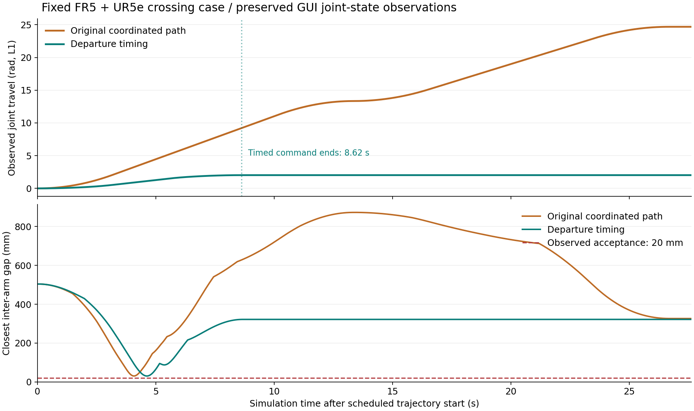

평가 범위와 판정
예비 평가동일한 양팔 교차 사례 1개에서 큰 공동 우회를 출발 지연으로 줄인 예비 평가. GUI/headless 각 1회 비교와 고정 입력 오프라인 5회 측정.
- GUI 명령 궤적 26.628→8.622sim초, 관절 누적 이동량 24.692→2.024rad.
- 오프라인 총 중앙값 2.133초, 출발 탐색 1.891초. 사용자 지령→동작의 전체 wall 지연은 미측정.
- 58개는 두 팔의 출발 지연 후보. FR5 대기 2.3sim초는 계산 지연이 아님.
- 이전 소스 사본과 달리 최신 공동 장면에는 RRTConnect 설정·서비스 wall 기록·공통 바닥 충돌 모델이 있음.
해석의 한계
- 고유 시작·목표 1개이며 랜덤 목표의 성공률·P95/P99를 평가하지 않음.
- 물리 시뮬레이션 결과. 실물 로봇·실제 TCP·그리퍼·접촉 조립 성능을 검증하지 않음.
- 이산 자세·convex 충돌 근사에 따른 거리. 모든 연속 시각의 간격이나 전역 최적성을 보장하지 않음.
- 다음 순서: 상시 명령과 구간 계측 → 탐색 비용 분석 → 동일 랜덤 목표 비교 → 작업별 확장.
지령 → 계산 → 동작의 계측 범위
지령·장면 준비
미측정 / wall동일 요청 ID의 접수·상태 스냅샷 시각 미기록.
경로·출발 조정
부분 측정 / wall서비스 왕복과 별도 오프라인 탐색 측정. 같은 실행의 전체 구간 분해는 아님.
최종 안전검사
미측정 / wall검사 성공은 확인했으나 구간 전체 소요시간 미분리.
Action 수락·예약
부분 측정 / sim현재 sim 시각 +1초 예약과 시작 0.1초 전 양팔 수락 확인. wall 전송 지연 미계측.
실제 움직임·완료
추정 / sim수신 상태·Action·수렴 확인. 최초 이동은 0.005rad·0.05초 기준의 후처리 추정. 실물 아님.
정량 지표
n은 해당 조건에서 이 지표를 집계한 실행/반복 수입니다. 관측 자세 표본 수와 구분합니다. 서로 다른 시계·실행의 시간을 더해 전체 응답시간으로 사용하지 않습니다.
| 지표 | 조건 | 값 | 단위 / 시계 | 집계 / n | 범위·설명 |
|---|---|---|---|---|---|
| 지령 접수 → 최초 이동 | 지령 → 최초 이동 | 미측정 | s / wall | not_measured / 0 | 전체 요청 반응 지연 0초가 아닌 미측정. 아래 오프라인·sim 시간을 합산하지 않음. |
| 오프라인 계산 총 소요 | 고정 입력 오프라인 5회 | 2.13343 | s / wall | median / 5 | 고정 입력 1개 × 같은 프로세스 5회 새 MoveIt 계획·ROS 검사·전송·실행·전체 launch 시간 제외. |
| 출발 시점 탐색 | 고정 입력 오프라인 5회 | 1.89081 | s / wall | median / 5 | 고정 입력 1개 × 같은 프로세스 5회 새 MoveIt 계획·ROS 검사·전송·실행·전체 launch 시간 제외. |
| 모델·평가기 생성 | 고정 입력 오프라인 5회 | 0.0339963 | s / wall | median / 5 | 고정 입력 1개 × 같은 프로세스 5회 새 MoveIt 계획·ROS 검사·전송·실행·전체 launch 시간 제외. |
| MoveIt 계획 서비스 응답 | MoveIt 요청 / setup | 0.062159 | s / wall | single / 1 | 고정 사례 원본 생성 실행의 요청별 기록 서버 계산·ROS 왕복·클라이언트 대기 포함. 내부 플래너 시간이나 순수 DDS 비용이 아님. |
| MoveIt 계획 서비스 응답 | MoveIt 요청 / left | 0.0349643 | s / wall | single / 1 | 고정 사례 원본 생성 실행의 요청별 기록 서버 계산·ROS 왕복·클라이언트 대기 포함. 내부 플래너 시간이나 순수 DDS 비용이 아님. |
| MoveIt 계획 서비스 응답 | MoveIt 요청 / right | 0.0281534 | s / wall | single / 1 | 고정 사례 원본 생성 실행의 요청별 기록 서버 계산·ROS 왕복·클라이언트 대기 포함. 내부 플래너 시간이나 순수 DDS 비용이 아님. |
| MoveIt 계획 서비스 응답 | MoveIt 요청 / both | 0.188807 | s / wall | single / 1 | 고정 사례 원본 생성 실행의 요청별 기록 서버 계산·ROS 왕복·클라이언트 대기 포함. 내부 플래너 시간이나 순수 DDS 비용이 아님. |
| 명령된 궤적 시간 | gui / 기존 공동 회피 | 26.6283 | s / sim | single / 1 | 시간 파라미터화된 명령 길이 전체 wall 완료 지연이 아님. |
| 명령된 궤적 시간 | gui / 출발 조정 | 8.62195 | s / sim | single / 1 | 시간 파라미터화된 명령 길이 전체 wall 완료 지연이 아님. |
| 명령된 궤적 시간 | headless / 기존 공동 회피 | 26.6283 | s / sim | single / 1 | 시간 파라미터화된 명령 길이 전체 wall 완료 지연이 아님. |
| 명령된 궤적 시간 | headless / 출발 조정 | 8.62195 | s / sim | single / 1 | 시간 파라미터화된 명령 길이 전체 wall 완료 지연이 아님. |
| 계획 관절 누적 이동량 | gui / 기존 공동 회피 | 24.6917 | rad / 해당 없음 | single / 1 | 모든 관절의 |Δq| 합 미터 단위 이동거리·소비 에너지가 아님. |
| 계획 관절 누적 이동량 | gui / 출발 조정 | 2.02372 | rad / 해당 없음 | single / 1 | 모든 관절의 |Δq| 합 미터 단위 이동거리·소비 에너지가 아님. |
| 계획 관절 누적 이동량 | headless / 기존 공동 회피 | 24.6917 | rad / 해당 없음 | single / 1 | 모든 관절의 |Δq| 합 미터 단위 이동거리·소비 에너지가 아님. |
| 계획 관절 누적 이동량 | headless / 출발 조정 | 2.02372 | rad / 해당 없음 | single / 1 | 모든 관절의 |Δq| 합 미터 단위 이동거리·소비 에너지가 아님. |
| 계획 최소 팔 간 간격 | gui / 기존 공동 회피 | 30.848 | mm / 해당 없음 | single / 1 | native 거리와 JTC spline의 이산 검사 계획 기준 30mm, 최대 10ms 간격. 연속 시간 전체의 보증 아님. |
| 계획 최소 팔 간 간격 | gui / 출발 조정 | 33.1436 | mm / 해당 없음 | single / 1 | native 거리와 JTC spline의 이산 검사 계획 기준 30mm, 최대 10ms 간격. 연속 시간 전체의 보증 아님. |
| 계획 최소 팔 간 간격 | headless / 기존 공동 회피 | 30.848 | mm / 해당 없음 | single / 1 | native 거리와 JTC spline의 이산 검사 계획 기준 30mm, 최대 10ms 간격. 연속 시간 전체의 보증 아님. |
| 계획 최소 팔 간 간격 | headless / 출발 조정 | 33.1436 | mm / 해당 없음 | single / 1 | native 거리와 JTC spline의 이산 검사 계획 기준 30mm, 최대 10ms 간격. 연속 시간 전체의 보증 아님. |
| 관측 최소 팔 간 간격 | gui / 기존 공동 회피 | 30.7457 | mm / 해당 없음 | single / 1 | 한 실행의 수신 관절 자세에서 얻은 최소값 수신 자세 2763개, 최대 간격 약 12ms. 값 하나는 실행 1회의 결과. |
| 관측 최소 팔 간 간격 | gui / 출발 조정 | 30.6436 | mm / 해당 없음 | single / 1 | 한 실행의 수신 관절 자세에서 얻은 최소값 수신 자세 2763개, 최대 간격 약 12ms. 값 하나는 실행 1회의 결과. |
| 관측 최소 팔 간 간격 | headless / 기존 공동 회피 | 30.7457 | mm / 해당 없음 | single / 1 | 한 실행의 수신 관절 자세에서 얻은 최소값 수신 자세 2763개, 최대 간격 약 12ms. 값 하나는 실행 1회의 결과. |
| 관측 최소 팔 간 간격 | headless / 출발 조정 | 30.6288 | mm / 해당 없음 | single / 1 | 한 실행의 수신 관절 자세에서 얻은 최소값 수신 자세 2763개, 최대 간격 약 12ms. 값 하나는 실행 1회의 결과. |
| 최종 목표 최대 오차 | gui / 기존 공동 회피 | 0.00623881 | rad / 해당 없음 | single / 1 | 양팔 관절 목표 수렴 성공 기준 0.01rad 미만의 연속 상태 메시지와 Action 결과를 함께 검사. |
| 최종 목표 최대 오차 | gui / 출발 조정 | 0.00606882 | rad / 해당 없음 | single / 1 | 양팔 관절 목표 수렴 성공 기준 0.01rad 미만의 연속 상태 메시지와 Action 결과를 함께 검사. |
| 최종 목표 최대 오차 | headless / 기존 공동 회피 | 0.00623881 | rad / 해당 없음 | single / 1 | 양팔 관절 목표 수렴 성공 기준 0.01rad 미만의 연속 상태 메시지와 Action 결과를 함께 검사. |
| 최종 목표 최대 오차 | headless / 출발 조정 | 0.00606882 | rad / 해당 없음 | single / 1 | 양팔 관절 목표 수렴 성공 기준 0.01rad 미만의 연속 상태 메시지와 Action 결과를 함께 검사. |
| 검증 전체 소요 | gui / 기존 공동 회피 | 41.4403 | s / wall | single / 1 | 각 새 launch의 준비·명령·관측·정리 동일 비교 관측 구간 27.628sim초 포함. 계획 지연으로 해석하지 않음. |
| 검증 전체 소요 | gui / 출발 조정 | 41.109 | s / wall | single / 1 | 각 새 launch의 준비·명령·관측·정리 동일 비교 관측 구간 27.628sim초 포함. 계획 지연으로 해석하지 않음. |
| 검증 전체 소요 | headless / 기존 공동 회피 | 37.988 | s / wall | single / 1 | 각 새 launch의 준비·명령·관측·정리 동일 비교 관측 구간 27.628sim초 포함. 계획 지연으로 해석하지 않음. |
| 검증 전체 소요 | headless / 출발 조정 | 37.3134 | s / wall | single / 1 | 각 새 launch의 준비·명령·관측·정리 동일 비교 관측 구간 27.628sim초 포함. 계획 지연으로 해석하지 않음. |
| 접촉 수 | gui / 기존 공동 회피 | 0 | count / 해당 없음 | single / 1 | 해당 실행의 전체 물리 스텝 감시 동작 후 수렴·정상 종료와 함께 판정. 실물 제동 시험 아님. |
| 접촉 수 | gui / 출발 조정 | 0 | count / 해당 없음 | single / 1 | 해당 실행의 전체 물리 스텝 감시 동작 후 수렴·정상 종료와 함께 판정. 실물 제동 시험 아님. |
| 접촉 수 | headless / 기존 공동 회피 | 0 | count / 해당 없음 | single / 1 | 해당 실행의 전체 물리 스텝 감시 동작 후 수렴·정상 종료와 함께 판정. 실물 제동 시험 아님. |
| 접촉 수 | headless / 출발 조정 | 0 | count / 해당 없음 | single / 1 | 해당 실행의 전체 물리 스텝 감시 동작 후 수렴·정상 종료와 함께 판정. 실물 제동 시험 아님. |
| Paced real-time factor | gui / 기존 공동 회피 | 1.00003 | ratio / 해당 없음 | single / 1 | 해당 native 계측 구간 ROS·GUI 전체 처리 성능이나 최대 처리량이 아님. |
| Paced real-time factor | gui / 출발 조정 | 1.00005 | ratio / 해당 없음 | single / 1 | 해당 native 계측 구간 ROS·GUI 전체 처리 성능이나 최대 처리량이 아님. |
| Paced real-time factor | headless / 기존 공동 회피 | 1.00003 | ratio / 해당 없음 | single / 1 | 해당 native 계측 구간 ROS·GUI 전체 처리 성능이나 최대 처리량이 아님. |
| Paced real-time factor | headless / 출발 조정 | 1.00005 | ratio / 해당 없음 | single / 1 | 해당 native 계측 구간 ROS·GUI 전체 처리 성능이나 최대 처리량이 아님. |
| FR5 끝단 프레임 경로 | gui / 기존 공동 회피 | 1.76399 | m / 해당 없음 | single / 1 | 계획 경로의 프레임 원점 이동량 left_wrist3_link / right_tool0 기준. 실제 공구 TCP가 아님. |
| FR5 끝단 프레임 경로 | gui / 출발 조정 | 0.695331 | m / 해당 없음 | single / 1 | 계획 경로의 프레임 원점 이동량 left_wrist3_link / right_tool0 기준. 실제 공구 TCP가 아님. |
| FR5 끝단 프레임 경로 | headless / 기존 공동 회피 | 1.76399 | m / 해당 없음 | single / 1 | 계획 경로의 프레임 원점 이동량 left_wrist3_link / right_tool0 기준. 실제 공구 TCP가 아님. |
| FR5 끝단 프레임 경로 | headless / 출발 조정 | 0.695331 | m / 해당 없음 | single / 1 | 계획 경로의 프레임 원점 이동량 left_wrist3_link / right_tool0 기준. 실제 공구 TCP가 아님. |
| UR5e 끝단 프레임 경로 | gui / 기존 공동 회피 | 2.21351 | m / 해당 없음 | single / 1 | 계획 경로의 프레임 원점 이동량 left_wrist3_link / right_tool0 기준. 실제 공구 TCP가 아님. |
| UR5e 끝단 프레임 경로 | gui / 출발 조정 | 0.551507 | m / 해당 없음 | single / 1 | 계획 경로의 프레임 원점 이동량 left_wrist3_link / right_tool0 기준. 실제 공구 TCP가 아님. |
| UR5e 끝단 프레임 경로 | headless / 기존 공동 회피 | 2.21351 | m / 해당 없음 | single / 1 | 계획 경로의 프레임 원점 이동량 left_wrist3_link / right_tool0 기준. 실제 공구 TCP가 아님. |
| UR5e 끝단 프레임 경로 | headless / 출발 조정 | 0.551507 | m / 해당 없음 | single / 1 | 계획 경로의 프레임 원점 이동량 left_wrist3_link / right_tool0 기준. 실제 공구 TCP가 아님. |
표본과 평가 조건
| 조건 | 고유 사례 / 실행 수 | 성공 / 실패 | seed·범위 |
|---|---|---|---|
| 고정 입력 오프라인 5회 | 1 / 5 | 미집계 | 새 랜덤 목표·planner seed 없음. 같은 입력과 프로세스를 반복. 매 회 모델·평가기 재생성. OS 캐시 초기화·CPU 격리 없음. 로봇 동작 성공률 표본 아님. |
| gui / 기존 공동 회피 | 1 / 1 | 1 / 0 | 같은 동결 궤적 묶음 재사용. 새 랜덤 목표 아님. 실행 20261020T095632.514137Z-0dd355ed. 성공은 양팔 Action·수렴·접촉 0·정상 종료 판정. |
| gui / 출발 조정 | 1 / 1 | 1 / 0 | 같은 동결 궤적 묶음 재사용. 새 랜덤 목표 아님. 실행 20261020T095714.283615Z-ff502bd6. 성공은 양팔 Action·수렴·접촉 0·정상 종료 판정. |
| headless / 기존 공동 회피 | 1 / 1 | 1 / 0 | 같은 동결 궤적 묶음 재사용. 새 랜덤 목표 아님. 실행 20261020T095425.623950Z-2076b06f. 성공은 양팔 Action·수렴·접촉 0·정상 종료 판정. |
| headless / 출발 조정 | 1 / 1 | 1 / 0 | 같은 동결 궤적 묶음 재사용. 새 랜덤 목표 아님. 실행 20261020T095503.903018Z-55db9c07. 성공은 양팔 Action·수렴·접촉 0·정상 종료 판정. |
| MoveIt 요청 / setup | 1 / 1 | 미집계 | 고정 사례의 서로 다른 요청 4개. 4개 랜덤 사례 아님. 원본 생성 실행 20261020T095257.211097Z-fa120f7d의 서비스 왕복 1회. |
| MoveIt 요청 / left | 1 / 1 | 미집계 | 고정 사례의 서로 다른 요청 4개. 4개 랜덤 사례 아님. 원본 생성 실행 20261020T095257.211097Z-fa120f7d의 서비스 왕복 1회. |
| MoveIt 요청 / right | 1 / 1 | 미집계 | 고정 사례의 서로 다른 요청 4개. 4개 랜덤 사례 아님. 원본 생성 실행 20261020T095257.211097Z-fa120f7d의 서비스 왕복 1회. |
| MoveIt 요청 / both | 1 / 1 | 미집계 | 고정 사례의 서로 다른 요청 4개. 4개 랜덤 사례 아님. 원본 생성 실행 20261020T095257.211097Z-fa120f7d의 서비스 왕복 1회. |
| 지령 → 최초 이동 | 0 / 0 | 미집계 | 미실행 사용자 지령과 실제 움직임을 동일 wall 요청 ID로 연결하지 못함. |
자료와 재현 정보

기존 상세 HTML: 영상·대안·세션 대조 (원본 보존) legacy_report
원본 보고서 스냅샷·반복 시간·시계열 JSON data
오프라인 5회 원본 CSV data
기준 코드: 0c31c469f08f853c775222a098706bef3f154bb7
- 평가 ID
- 2026-10-21-phase1
- 작업장면
- fr5_ur5e
- 모델
- FR5, UR5e
- 시나리오
- dual_arm_crossing
- 입력 종류
- fixed_joint_targets
- 환경 / os
- Ubuntu 22.04.5 LTS
- 환경 / cpu
- Intel Core i7-13700 / 24 logical CPUs
- 환경 / memory
- 31 GiB reported by free; approximately 32 GB installed
- 환경 / python
- 3.10.12
- 환경 / python_mujoco
- 3.14.0
- 환경 / numpy
- 1.26.4
- 환경 / native_mujoco
- 3.12.0
- 환경 / gpu_probe
- This execution environment could not communicate with the NVIDIA driver via nvidia-smi. No new GPU-planner benchmark was performed.
- 환경 / historical_gui_gpu
- 2026-10-20 preserved GUI record: RTX 3050, 6144 MiB, NVIDIA 580.178.04, OpenGL 4.6
- 환경 / ros
- ROS 2 Humble
- 환경 / measurement_dates
- GUI/headless: 2026-10-20; offline: 2026-10-21; Asia/Seoul